Conoce nuestra Clinica
Ubicada estratégicamente en Acoyte 454, 1°A, barrio de Caballito, en la Ciudad Autónoma de Buenos Aires, rodeada de decenas de medios de transporte para que nuestros pacientes puedan llegar fácilmente a nuestras instalaciones.
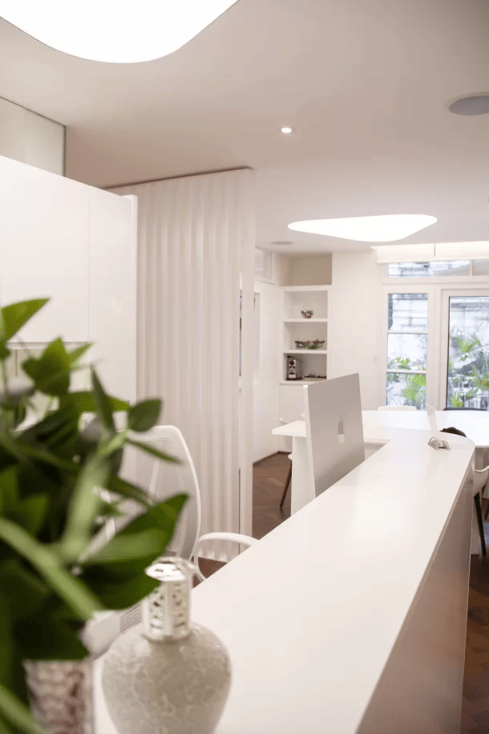Acerca de la Clinica
Con más de 25 años de trayectoria, la Clinica Medica Dontar es un centro de alta complejidad referente en la Ciudad de Buenos Aires.
El Hospital Alemán se destaca por su plantel de profesionales altamente calificados, su constante innovación tecnológica y su equipamiento de última generación, garantizando servicios de primer nivel para pacientes de Argentina y del exterior.
Historia de la Clinica
Nuestros comienzos
La historia de la Clinica Dontar comenzó el 26 de agosto del 2000. Ese día, nuestra Directora la Dra. Cassataro, se reunió en el Colegio de Medicos de la Ciudad de Buenos Aires y determinó que debía existir en Buenos Aires un centro donde las personas de este país, pudieran ser atendidos.

Nuestros Servicios
Explorá nuestra amplia gama de servicios médicos, que incluyen atención de alta complejidad junto con otras especialidades variadas. Con un enfoque en la excelencia médica, tecnología de avanzada y un equipo de profesionales con capacitación de primer nivel, ofrecemos cuidados integrales adaptados a las necesidades de cada paciente.

Contando con mas de 15 especialidades para darle a tu salud la atencion mas completa...
- Odontologia
- Cardiologia
- Neurologia
- Nutricion
- Endocrinologia
- Psiquiatria
- Oftalmologia
- Oncologia
- Urologia
- Ginecologia
- Dermatologia
- Pediatria
- Flebologia
- Nefrologia
- Gastroenterologia
Nuestras instalaciones
 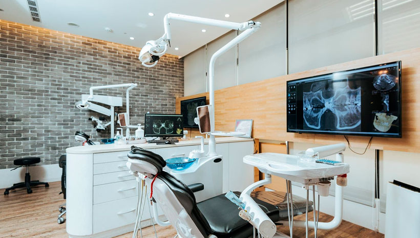
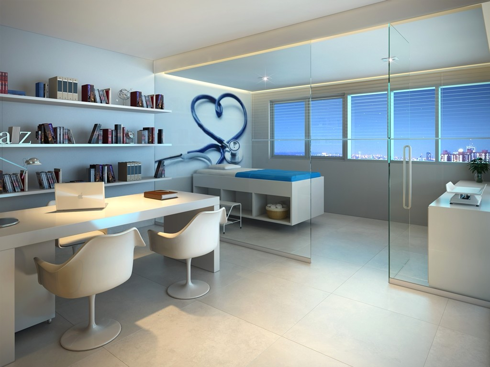
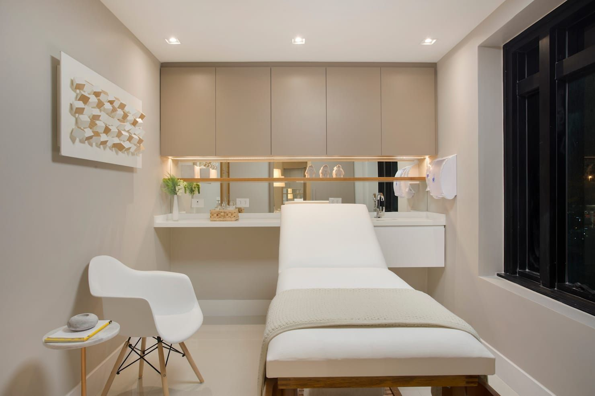
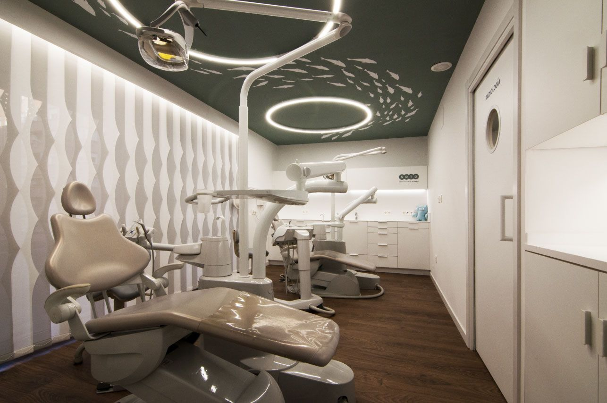
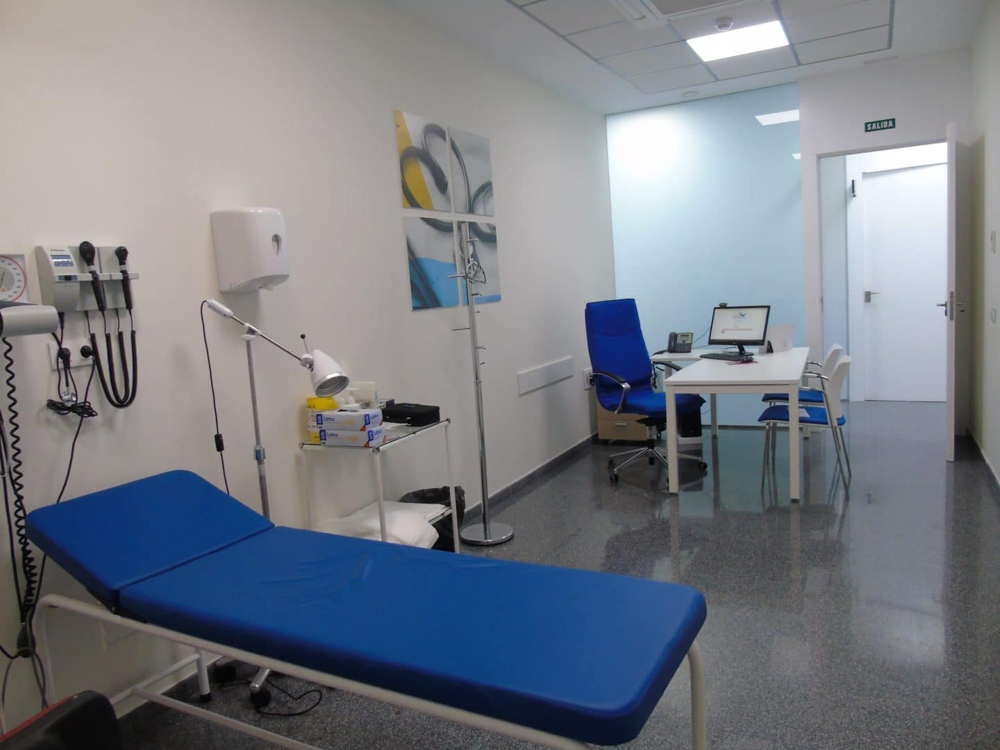
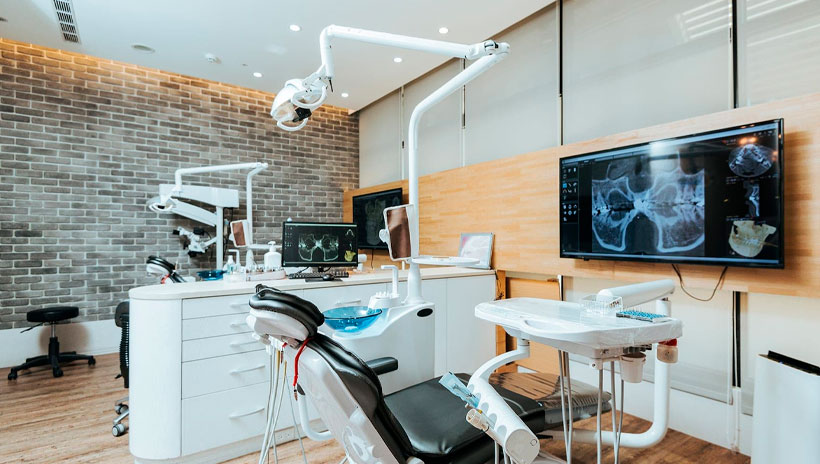
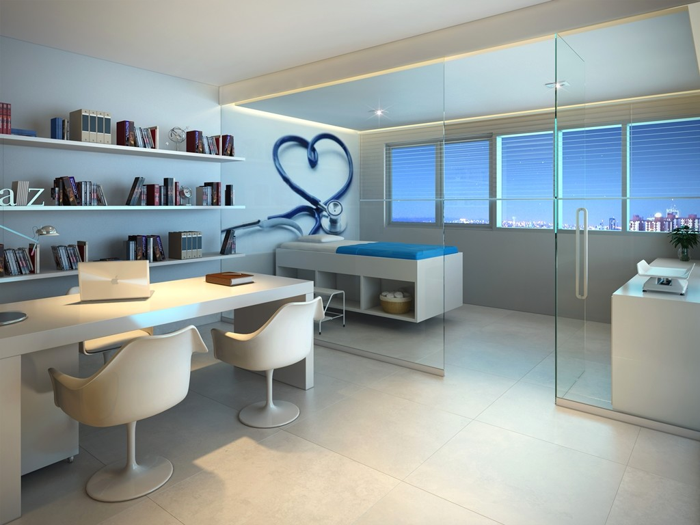
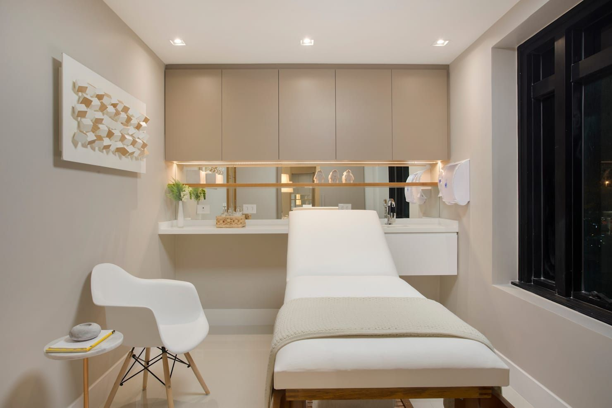
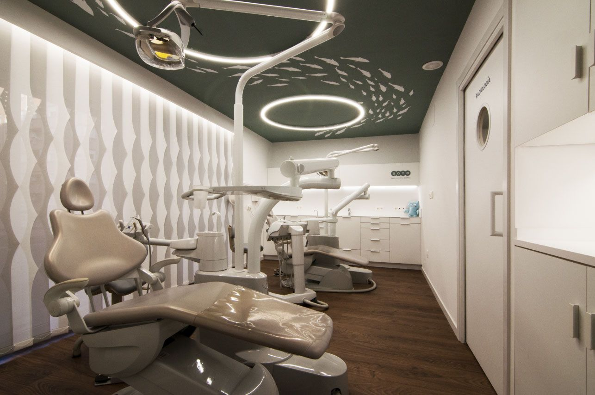
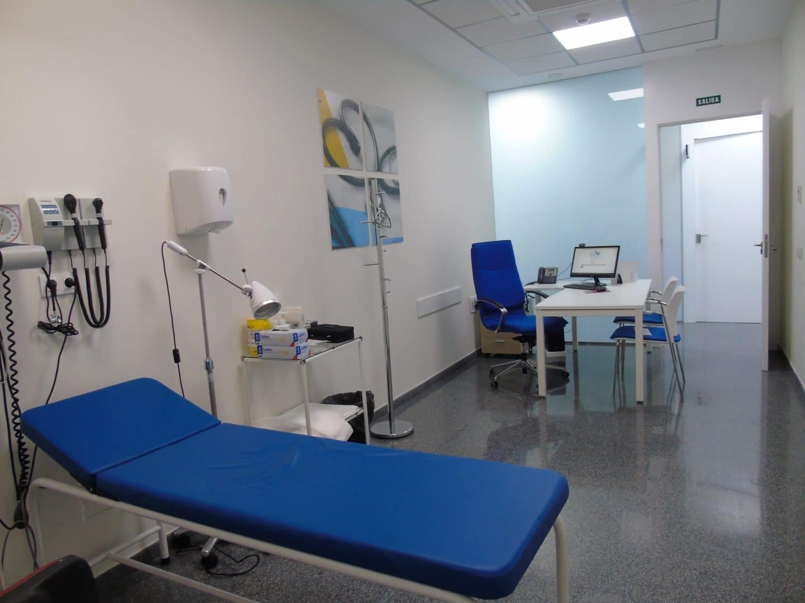